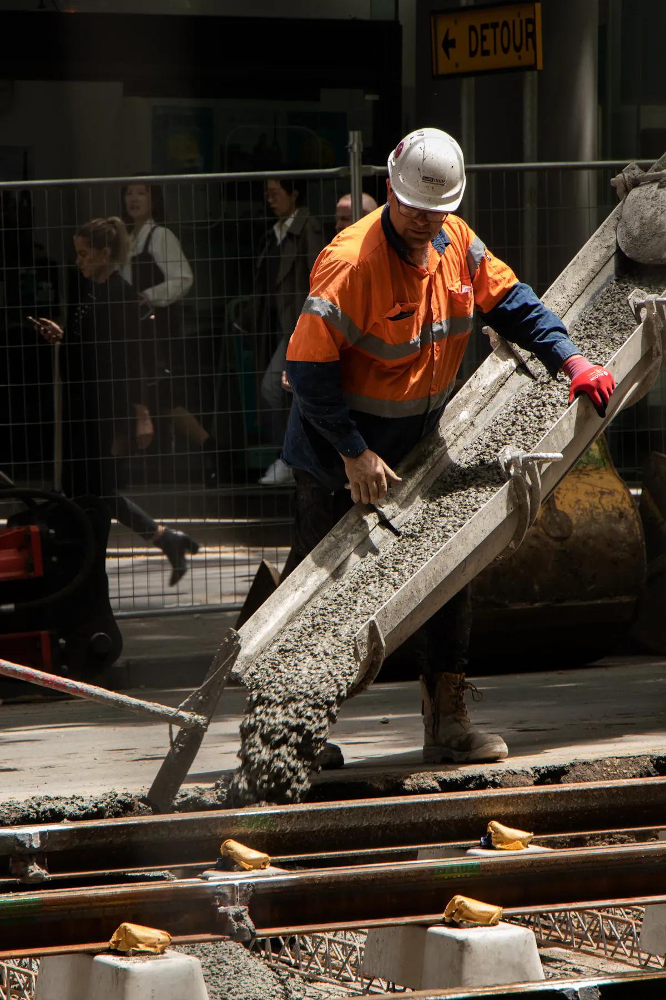

Driveways & entrances
Exposed or plain concrete driveways built for daily use. New pours, replacements and extensions.
NEWCASTLE · NSW
Driveways, pathways, slabs, footings and earthworks. One crew from first cut to final finish.
CONCRETE / EARTHWORKS / NEWCASTLE
01 / WHAT WE DO
Residential and builder work across Newcastle and the Hunter. Clear scope, proper prep, no shortcuts.
Exposed or plain concrete driveways built for daily use. New pours, replacements and extensions.
Clean connections between house, garden, pool and street. Practical falls and a finish that lasts.
Level, set out and poured for what goes above. Shed slabs, alfresco pads, extension floors and hardstand.
Excavation, steel and concrete for footings and piers. Off-form retaining walls and steps ready for the next trade.
Aggregate, broomed, honed and plain. We match the finish to the house, the use and the maintenance you want.
Strip, cut, level and spoil removal before the pour. The ground is right before concrete goes down.
A better surface to come home to. One crew, start to finish.
Set-out, footings, slab prep and pour packages priced from drawings.
Hardstand, access and repair work with clean sites and clear programs.

ON THE TOOLS02 / HOW WE WORK
The same crew cuts, forms, steels, pours and finishes. You deal with the people doing the work — not a call centre.
03 / THE PROCESS
A recent Newcastle pour, start to finish. Excavation, steel, formwork, pour, finish — documented, not staged.

The footprint is cut, levels checked and the base prepared before formwork or steel.

Reinforcement tied and chairs set, then the footing is poured level and left to cure.

Shuttering is set and braced so the finished wall runs straight and the corners stay sharp.

Forms stripped, surface finished and the site cleaned. Ready for the next stage.

05 / WHERE WE WORK
Based in Newcastle. Pouring across Lake Macquarie, Maitland, Cessnock, Port Stephens, Singleton and Muswellbrook. If you're nearby and need concrete done properly, ask.
06 / QUESTIONS
Straight answers. If yours isn't here, call the crew.
Newcastle, Lake Macquarie, Maitland, Cessnock, Port Stephens, Singleton, Muswellbrook and the wider Hunter Region.
From single pathways and shed slabs through to full driveways, footing packages and multi-part builder works.
Call or send the enquiry form. We arrange an on-site measure, talk through the finish and site conditions, then provide a fixed written price before work starts.
Yes. Send the drawings or a summary of the slab, footing or earthworks package and we will price the scope and program.
Often, yes. Bring a photo or show us the existing surface and we will recommend the closest practical finish, colour and aggregate.
Yes. Exposed aggregate, broomed, honed and plain finishes are all available depending on the look and slip resistance you need.
07 / GET A PRICE
Tell us what you're building and where. We'll come out, measure it and give you a fixed written price.
CALL THE CREW0436 486 214 ↗No automated quoting. No invented prices. A real conversation about the site.
PROJECT ENQUIRY